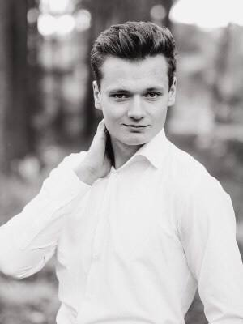

Сосницький Владислав Олександрович
(21 рік,Студент,прохожу навчання у Beetroot)

Дата народження: 4.10.2001
Місце народження: місто Вінниця
Номер телефону: +380 (97) 641 04 25
Сімейний стан:Одружений
Інтереси:
- Читання книжок
- Вивчення іноземних мов
- Опанування IT сфери
Освіта
- Гуманітарна гімназія номер один
(навчався з 2007 по 2019)
- Вінницький Торгівельно Економічний інститут
(навчався з 2019 по 2021)
Спеціальність:Юриспруденція
- Вінницький Національний Політехнічний університет
(навчаюсь з 2022 по 2026)
Спеціальність:Кібербезпека(обробка,захист,підтримка інформації)
Ось декілька прикладів використання мови С++ при написанні моїх програм -1та
2
Досвід роботи
- Бариста (з 2019 по 2023)
працював у різних місцях, паралельно навчаючись
- Перекладач(копірайтер) (з лютого 2021 по червень 2021)
Отримав досвід роботи як переклда та працівник на фрілансі у компанії
4Writers
Трохи про себе
Я вважаю себе доволі спокійним, вдумливим та відповідальним
як в роботі так і вначанні.Найголовнішим в житті для мене є постійний розвиток,
сімейне благополуччя та наближення до своєї цілі.
У майбутньому я планую присвятити своє життя подальшому поглибленню у It сферу та
згодом почати втілювати у жииття свої проекти та ідеї.
Навички
- Вільний розмовний та письмовий англійський
- Впевнений користувач пк
- Середній рівень знання мови C,C++